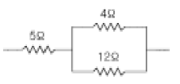
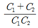
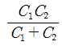
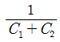

항로표지산업기사 (2005-05-29 기출문제)
1과목: 항로표지일반
1. 선박의 출입이 빈번하지 않은 항만이나 하구 등에 출·입항 선박이 있을 때 또는 고기잡이 시기 등 선박의 교통이 일시적으로 많아질 때 임시로 설치되는 등화는?
- 도등
- 부등
- 임시등
- 등선
(정답률: 알수없음)

2. 축척이 5 만분의 1 이상이고 항만, 정박지, 협수로 등 좁은 구역을 세부에 이르기 까지 상세히 그린 해도로서 평면도는?
- 해안도
- 항양도
- 항박도
- 항해도
(정답률: 알수없음)
3. IALA 해상부표식 "B" 방식 적용 국가가 아닌 것은?
- 일본
- 대한민국
- 필리핀
- 영국
(정답률: 알수없음)
4. 선박의 위치를 측정하는 방법중 두 물표가 일직선상에 겹쳐 보일 때에는, 관측자는 그들 목표를 연결한 직선을 이용하여 위치를 선정하는 것은 다음 중 무엇인가?
- 방위선에 의한 위치선
- 중시선에 의한 위치선
- 수평거리에 의한 위치선
- 수평협각에 의한 위치선
(정답률: 알수없음)
5. 사설 항로표지 소유자가 설치 목적이 소멸되어 항로표지를 폐지하고자 하는 때에 폐지예정일 얼마 전에 해양수산부 장관에게 신고하여야 하나?
- 3개월전
- 6개월전
- 2개월전
- 15일 이전
(정답률: 알수없음)
6. 주간표지 중 암초, 사주(모래 톱)등의 위치를 표시하기 위하여 마련된 경계표는 다음 중 어느 것인가?
- 입표
- 부표
- 도표
- 육표
(정답률: 알수없음)
7. 방위표지에 사용한 등질 중 틀린 것은?
- 북측 : 연속적인 급섬광 또는 초급섬광
- 동측 : 2회의 급섬광 또는 초급섬광 다음에 암간
- 남측 : 6회의 급섬광 또는 초급섬광 다음에 장섬광 다음에 암간
- 서측 : 9회의 급섬광 또는 초급섬광 다음에 암간
(정답률: 알수없음)
8. 대한민국의 배타적 경제수역에서의 항로표지 설치 권한은 누구에게 있는가?
- 외교통상부 장관
- 해양수산부 장관
- 법무부 장관
- 행정자치부 장관
(정답률: 알수없음)
9. 조석의 간만에 따라 수면위에 나타났다 수중에 잠겼다하는 바위는?
- 간출암
- 암암
- 노출암
- 수상암
(정답률: 알수없음)
10. 두표의 방향이 정점상향쌍두표로 사용하는 표지의 도색이 올바르게 표현된 것은?
- 흑황횡선
- 황흑횡선
- 흑황흑횡선
- 흑황종선
(정답률: 알수없음)
11. 내해 또는 시계 불량한 지역에 설치하여야 할 부표간의 평균거리는 얼마이어야 하는가?
- 0.5마일 정도
- 1마일 정도
- 1.5마일 정도
- 2마일 정도
(정답률: 알수없음)
12. 무인표지의 종류별 정비점검 주기에 대한 적용 기준으로 맞는 것은?
- 무인등대 : 4개월에 1회 이상
- 등부표 : 2개월에 1회 이상
- 등부표 : 1개월에 1회 이상
- 무인등대 : 3개월에 1회 이상
(정답률: 알수없음)
13. 통항이 곤란한 좁은 수로, 항만입구 등에서 진입 항로의 연장선 위에 높고 낮은 2∼3개의 등화를 전ㆍ후에 설치하여 그들의 중시선에 의해서 선박을 유도하는 항로표지는 무엇인가?
- 교량등
- 도등
- 조사등
- 등표
(정답률: 알수없음)
14. 해협, 수도, 소해수로, 항만 등 위험한 해면을 항해하는 선박을 안전하게 유도하기 위하여 설치하는 항로표지를 무엇이라 하는가?
- 유도표지
- 항양표지
- 연안표지
- 특수표지
(정답률: 알수없음)
15. 지리학적 광달거리를 구하는 계산식은? (단, D : 광달거리(마일), H : 수면 위의 등고(m), h : 수면 위의 관측자 눈의 높이(m) )
- D = 2.803(H⒟×h)
- D = 2.308(H⒟×h)
- D = 2.038(H⒟×h)
- D = 2.083(H⒟×h)
(정답률: 알수없음)
16. 항로표지의 해도상 표기 및 등대표 등 간행물의 정기적인 간행 업무를 담당하는 부서는 어느 곳 인가?
- 국립해양조사원
- 국립수산진흥원
- 해양수산부
- 건설교통부
(정답률: 알수없음)
17. 정해진 등질이 반복되는 시간을 말하며 1섬광이 최초에 시작되는 시각으로부터 그 다음 섬광이 시작될 때 까지의 시간을 무엇이라 하는가?
- 주기
- 점등시간
- 소등시간
- 등질
(정답률: 알수없음)
18. 현행 항로표지법시행령에 규정하고 있는 항로표지위탁관리 업의 등록기준 중 항로표지점검·정비용 선박은 몇 톤이상을 소유하거나 임차하여야 하는가?
- 1톤 이상
- 2톤 이상
- 5톤 이상
- 10톤 이상
(정답률: 알수없음)
19. 북방위표지의 두표 형상으로 맞는 것은?
- 저면대향 흑색원추형 2개를 종게
- 정점대향 흑색원추형 2개를 종게
- 정점상향 흑색원추형 2개를 종게
- 정점하향 흑색원추형 2개를 종게
(정답률: 알수없음)
20. 고립장해표지의 두표는 구형 2개를 종게하여 설치한다. 이때 구형 두표의 구와 구간의 간격으로 적정한 것은?
- 구 직경의 30%
- 구 직경의 40%
- 구 직경의 50%
- 바라보기 좋게 적정하게 뛰워 놓는다
(정답률: 알수없음)
2과목: 전기, 전자기초
21. 직류기의 전기자에 사용되는 권선법은?
- 2층권
- 개로권
- 환상권
- 단층권
(정답률: 알수없음)
22. 축전지 용량이 30[Ah]인 전지에서, 방전시켜 한계(방전 한계 전압)에 도달하기까지 10시간이 소요되었다면, 방전 전류는 몇[A]인가?
- 1
- 1.25
- 3
- 300
(정답률: 알수없음)
23. 그림과 같이 직·병렬 연결된 저항의 합성저항[Ω]을 구하면?

- 21
- 8
- 5.3
- 13
(정답률: 알수없음)
24. 계자 철심에 잔류 자기가 없어도 발전되는 직류기는?
- 타여자기
- 분권기
- 복권기
- 직권기
(정답률: 알수없음)
25. P-N접합으로 제작된 태양전지 발전에 대한 설명 중 옳지 않은 것은?
- 태양전지에서 생성되는 전기는 직류이다.
- 빛 에너지를 이용한다.
- 가정용 전원으로 사용하기 위해서는 인버터가 필요하다.
- P형 층은 음극으로, N형 층은 양극으로 대전하여 전기를 발생시킨다.
(정답률: 알수없음)
26. 태양전지에 관한 다음 설명 중 옳지 못한 것은?
- 무공해이며 에너지원이 풍부하다.
- 장치가 간단하고 보수가 간편하다.
- 산간 벽지나 외딴섬에서의 전원으로 적합하다.
- 대전력용으로서도 다른 전원장치보다 유리하다.
(정답률: 알수없음)
27. 380[V] 전로의 대지전압이 200[V] 이면 절연저항 최소값은?
- 0.1[MΩ]
- 0.2[MΩ]
- 0.3[MΩ]
- 0.4[MΩ]
(정답률: 알수없음)
28. 전기자 저항 0.1[Ω], 전기자 전류 104[A], 유도 기전력 110.4[A]인 직류 분권 발전기의 단자전압[V]은?
- 110
- 106
- 102
- 100
(정답률: 알수없음)
29. 자력선은 다음과 같은 성질이 있다. 옳지 않은 것은?
- 자석의 외부에서는 N극에서 나와서 S극에서 끝난다.
- 자력선은 서로 교차 한다.
- 자력선에 그은 접선은 그 접점에서의 자장의 방향을 나타낸다.
- 한 점의 자력선의 밀도는 그 점의 자장의 세기를 나타낸다.
(정답률: 알수없음)
30. 저항으로만 구성된 전구의 전압과 전류의 위상 차는 얼마인가?
- 전류가 전압보다 90°앞선다.
- 전류가 전압보다 90°뒤진다.
- 전압이 전류보다 180°앞선다.
- 동위상이다.
(정답률: 알수없음)
31. 직류를 측정할 수 없는 계기는 어느 것인가?
- 가동코일형
- 전류력계형
- 유도형
- 열전형
(정답률: 알수없음)
32. 정전용량이 C1, C2인 두 개의 콘덴서를 병렬로 연결했을 때의 합성 정전용량은?
- C1+C2



(정답률: 알수없음)
33. 다음 중에서 고유저항이 가장 큰 물질은?
- 구리
- 은
- 알루미늄
- 니켈
(정답률: 알수없음)
34. 논리식 Y=AB+ABC를 간소화 하면?
- AB
- AB+1
- AB+C
- ABC
(정답률: 알수없음)
35. 원자핵과 결합을 이탈하여 원자와 원자 사이를 떠도는 전자는?
- 중성자
- 자유전자
- 가전자
- 양성자
(정답률: 알수없음)
36. 납 축전지의 설명 중 틀린 것은?
- 한 셀(cell)의 기전력은 약 2V이다.
- 전해액은 묽은 황산을 사용한다.
- 감극재로 이산화망간을 사용한다.
- 2차 전지이다.
(정답률: 알수없음)
37. 전지를 장기간 보존하게 되면 자기방전에 의해 용량이 감소하게 된다. 이때 자기방전량만을 항상 충전하는 부동충전방식의 일종인 것은?
- 보통충전
- 급속충전
- 세류충전
- 균등충전
(정답률: 알수없음)
38. 전자 유도 현상에서 유기 기전력의 크기에 관한 법칙은?
- 렌츠의 법칙
- 패러데이의 법칙
- 암페어의 법칙
- 쿨롱의 법칙
(정답률: 알수없음)
39. 발전기의 원리를 설명하는데 가장 적합한 법칙은?
- 플레밍의 왼손법칙
- 플레밍의 오른손법칙
- 암페어의 법칙
- 오옴의 법칙
(정답률: 알수없음)
40. 전원 주파수가 60[Hz]일 때 출력측 맥동주파수가 180[Hz]로 되는 정류방식은?
- 단상 전파정류
- 단상 브리지정류
- 3상 반파정류
- 3상 전파정류
(정답률: 알수없음)
3과목: 광파, 음파 표지
41. 다음 중 안전수역표지로 이용되는 등질은?
- 단섬광
- 군섬광
- 급섬광
- 모르스광
(정답률: 알수없음)
42. 압축공기에 의하여 사이렌을 취명시키는 방법으로 압축공기를 만드는데 필요한 발동기와 압축공기를 통과시켜 소리를 내는 공기압축기로 구성되어진 무신호기는?
- 에어사이렌
- 다이야폰
- 모터사이렌
- 다이야후램폰
(정답률: 알수없음)
43. 다음 중 가청주파수의 범위는?
- 20∼20,000㎐
- 200∼5,000㎐
- 32∼1,000㎑
- 100∼12,000㎑
(정답률: 알수없음)
44. 다음의 빛에 대한 설명 중 틀린 것은?
- 빛은 음파보다 파장이 길기 때문에 회절성이 강하다.
- 빛이 공기에서 다른 매질속으로 진행할 때는 속도가 달라진다.
- 빛은 공기중을 전파하는 횡파이다.
- 빛의 파형은 편광현상에 의해 알 수 있다.
(정답률: 알수없음)
45. 광도의 단위는 다음 중 어느 것인가?
- cd(칸델라)
- dB(데시벨)
- Hz(헤르쯔)
- kg(킬로그램)
(정답률: 알수없음)
46. 다음 중 측방표지로 이용되는 등질은?
- 단섬광
- 장섬광
- 급섬광
- 모르스광
(정답률: 알수없음)
47. 빛이 횡파라는 것을 증명하기 위해서는 어떤 실험을 하여야 알수 있는가?
- 회절 실험
- 편광 실험
- 굴절 실험
- 간섭 실험
(정답률: 알수없음)
48. 다음 중 등대 및 등표의 설계당시 고려해야 할 하중 및 외력에 대한 설명으로 잘못된 것은?
- 설계당시 고려해야 할 하중 및 외력은 자중, 지진력, 풍압력, 파의 타상력 및 이들의 조합에 의한 각 응력의 합계이다.
- 파도의 영향을 받지 아니하는 등대에 있어서는 (자중+풍압) 또는 (자중+지진력) 가운데 큰 힘을 채택한다.
- 파도의 작용을 받는 등대 및 등표는 (자중+파압력+풍압력+부력) 또는 (자중+지진력) 가운데 큰 힘을 채택한다.
- 풍압력은 풍압면적에 풍력계수를 곱한 것으로 압력을 받는 면적에 균일 분포되어 작용하는 것으로 한다.
(정답률: 알수없음)
49. 항로표지의 빛, 색채, 형상 등이 보이게 하는 방법 중 잘못된 것은?
- 시간적 또는 거리적으로 발견이 용이할 것
- 가시거리내에서 눈에 띄기 쉬울 것
- 가시거리내에서 배경 또는 타 등화와 분별하기 쉬울 것
- 주위 배경색과 비슷할 것
(정답률: 알수없음)
50. 다음은 항로표지를 설계할 때 고려하여야 할 하중 및 외력의 종류를 나열한 것이다. 해당되지 않는 것은?
- 자중
- 지진력
- 파의 타상력
- 설계파
(정답률: 알수없음)
51. 다음 중 등명기 상부등체 구성품에 해당되지 않는 것은?
- 전구 교환기
- 렌즈 보호대
- 조류 방지봉
- 전압조정장치
(정답률: 알수없음)
52. 선박의 위치를 결정할 때 목표물로서 가장 신뢰성이 낮은 야간표지는?
- 등부표
- 등표
- 등대
- 등주
(정답률: 알수없음)
53. 부동백광으로 측정한 광도가 10,000 칸델라인 등기를 사용하는 적색섬광의 등질을 갖는표지의 광도는 약 얼마인가? (단, 필터의 투과율은 20%, 실효광도를 부동광의 70%, 유리투과율 85%, 보수율 0.75를 적용)
- 750 칸델라
- 800 칸델라
- 893 칸델라
- 950 칸델라
(정답률: 알수없음)
54. 다음 중 등탑의 기초 형식에 포함되지 않는 것은?
- 중력식 기초
- 부력식 기초
- 부착식 기초
- 반력식 기초
(정답률: 알수없음)
55. 다음 중 지리학적 광달거리 요소가 아닌 것은?
- 표지등화 및 항해자의 수면상의 안의 높이
- 지구의 곡율
- 대기굴절
- 표지등화의 광도
(정답률: 알수없음)
56. F1(2)5S 의 등질을 올바르게 설명한 것은?
- 주기 5초, 군섬광(2)인 측방특수표지
- 주기 5초, 군섬광(2)인 북방위표지
- 주기 5초, 군섬광(2)인 안전수역표지
- 주기 5초, 군섬광(2)인 고립장애표지
(정답률: 알수없음)
57. 물체를 어느 방향에서나 볼 수 있는 것은 물체면에서 어떤 반사가 일어나기 때문인가?
- 난반사
- 정반사
- 전반사
- 위상반사
(정답률: 알수없음)
58. 등부표의 구조적 특성에서 표체 하부에 있는 것은?
- 등명기
- 중추(重錘)
- 번호판
- 태양전지판
(정답률: 알수없음)
59. 부표의 구조상 문제가 되는 곳 중 가장 관계가 없는 것은?
- 계류고리
- 인양고리
- 철탑과 부체와의 연결부
- 철판과 번호판 연결부
(정답률: 알수없음)
60. 다음 중 광달거리에 대한 주의 사항으로서 적절하지 않은 것은?
- 시계가 나쁘면 광달거리는 현저히 감소한다.
- 광력이 약한 등광일수록 광달거리가 불규칙하다.
- 등화의 높이가 낮을 수록 광달거리는 커진다.
- 지리학적 광달거리는 수온이 기온보다 높으면 증가한다.
(정답률: 알수없음)
4과목: 전파표지 및 시스템 이용
61. 다음의 항법 시스템중 가장 넓은 지역에서 사용할수 있고 정확도가 높은 것은?
- Loran-C
- GPS
- R.D.F
- DECCA
(정답률: 알수없음)
62. 등대 태양광 발전시스템의 전압조정장치에 대한 다음 설명 중에 옳은 것은?
- 이 장치는 태양전지의 소손을 방지하기 위하여 설치된 장치이다.
- 태양전지의 출력전압이 충전시의 전압보다 높을 경우 적절한 전압으로 조정하는 장치이다.
- 태양전지의 전압이 축전지의 전압보다 낮을 경우 적절한 전압으로 조정하는 장치이다.
- 축전지의 출력전압이 방전시의 전압보다 낮을 경우 적절한 전압으로 조정하는 장치이다.
(정답률: 알수없음)
63. Loran-C의 통제방식 중 "기선상에 있는 종국의 Loran-C 감시용 수신기로부터 정보를 이용한 기선통제"는 무엇인가?
- Alpha 통제
- Bravo 통제
- Charlie 통제
- Delta 통제
(정답률: 알수없음)
64. 다음 중 위성항법장치(GPS)에서 사용하고 있는 좌표계는?
- WGS-84 좌표계
- Tokyo Datum 좌표계
- ITRF-89 좌표계
- Bessel 좌표계
(정답률: 알수없음)
65. 다음 중 로란-C 감시소가 있는 곳은?
- 팔미도
- 영도
- 홍도
- 평택
(정답률: 알수없음)
66. GPS 위성의 L1, L2의 주파수대로 옳은 것은?
- 1575.42㎒, 1227.60㎒
- 1500.00㎒, 1100.00㎒
- 1250.25㎒, 1250.25㎒
- 850.26㎒, 557.34㎒
(정답률: 알수없음)
67. GPS위성을 이용한 위치측정 원리에 대한 설명중 옳지 않은 것은?
- 위성으로부터 발사전파의 도달시간을 측정하여 사용자까지의 거리를 구할 수 있다.
- 2개이상의 위성에 대한 거리를 측정하여 위치를 얻을 수 있다.
- 위성에서 발사되는 전파의 주파수를 측정하여 위치를 구한다.
- 3개의 위성에 대한 거리를 측정하여 위도, 경도를 알 수 있다.
(정답률: 알수없음)
68. 전파가 공기 중에서 전파하는 속도는?
- 3×108m/s
- 3×107m/s
- 3×105m/s
- 3×104m/s
(정답률: 알수없음)
69. 다음 중 레이더 및 VHF/DF 시스템 등 무인으로 운용되는 장비에 대한 원격감시가 가능한 것은?
- VTS
- AIS
- DGPS
- RDF
(정답률: 알수없음)
70. 레이더 송수신기에서 증폭이 가능한 주파수로 낮추는 장치는?
- 증폭기
- 하강기
- 혼합기
- 변조기
(정답률: 알수없음)
71. 다음 DGPS 시스템 구성요소 중 각 위성의 의사거리를 계산 하는 곳은?
- 감시국
- 기준국
- 통제센타
- 보정송신국
(정답률: 알수없음)
72. 마이크로파 표지국 중, 부표, 등표, 방파제 등대 등에 설치하여 레이더의 반사능률을 높여주기 위한 것은?
- Talking beacon
- Course beacon
- Radar reflector
- Shodarvision
(정답률: 알수없음)
73. LORAN-C 코리아체인의 송신국으로 바르게 짝지어 진 것은?
- 포항 - 광주 - Gesashi - Niijima - Ussuriisk
- 포항 - 광주 - Gesashi - Niijima - Hokkaido
- 포항 - 대전 - Niijima - Hokkaido - Ussuriisk
- 포항 - 광주 - 대전 - Gesashi - Niijima
(정답률: 알수없음)
74. 현재 운용되고 있는 전파표지가 아닌 것은?
- Loran-A
- DGPS
- Radar beacon
- GPS
(정답률: 알수없음)
75. 다음 중 전파의 성질이 아닌 것은?
- 전파는 균일한 매질내에서 일정한 속도로 직진한다.
- 전파는 진행 중에도 주파수가 일정히 유지된다.
- 전파는 다른 매질의 경계면에서 일부가 반사하며, 투과한 전파는 굴절한다.
- 전파가 파원에서 멀어짐에 따라 그 진폭은 점차로 증가한다.
(정답률: 알수없음)
76. 선박에서 발사한 전파의 방위를 측정해서 전파의 방위를 선박에 통보하는 무선국은?
- 지향성 무선표지국
- 무지향성 무선표지국
- 지향성 회전식 무선표지국
- 무선방향 탐지국
(정답률: 알수없음)
77. 태양의 폭발로 증가한 자외선에 의한 전파방해 현상은?
- 페이딩
- 공전
- 자기폭풍
- 델린져
(정답률: 알수없음)
78. 다음 중 공전의 전파 잡음 방해에 대해 S/N비를 개선시키기 위한 대책으로 가장 거리가 먼 것은?
- 수신기의 실효대역폭을 가능한 좁게 한다.
- 가능한 안테나를 크게 설치한다.
- 안테나에 Notch filter를 설치한다.
- 안테나의 지향성을 예민하게 한다.
(정답률: 알수없음)
79. 전파의 편성에 의한 분류에 해당하지 않는 것은?
- 직선편파
- 원편파
- 타원편파
- 곡선편파
(정답률: 알수없음)
80. 선박통항서비스(VTS)가 최초로 설치된 항구는?
- 영국의 리버풀항
- 영국의 런던항
- 네덜란드의 로텔담항
- 네덜란드의 암스텔담항
(정답률: 알수없음)